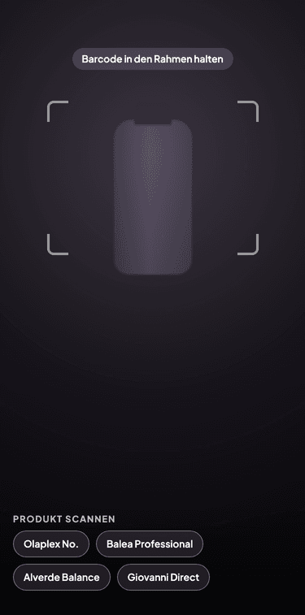
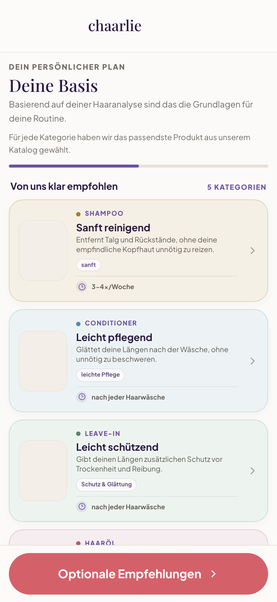

Oberfläche & Frizz
Heute
Dein Ziel
Frizz oder abstehende Haare sind nicht automatisch Haarbruch: Einzelne Fasern liegen weniger gleichmäßig in der Gesamtform.
Dein Ergebnis
Welliges, feines Haar mit mittlerer Dichte.
Heute
Dein Ziel
Frizz oder abstehende Haare sind nicht automatisch Haarbruch: Einzelne Fasern liegen weniger gleichmäßig in der Gesamtform.
Heute
Dein Ziel
Trockene oder strohige Längen fühlen sich weniger geschmeidig an.
Heute
Dein Ziel
Trockene Kopfhaut passt besser zu milder Reinigung als zu zusätzlicher Entfettung.
Dein nächster Schritt
Der Scanner zeigt dir, welche Produkte dazu passen.

Im Alltag
Dein nächster Schritt
7 Tage voller Zugriff.
Erinnerung per E-Mail.
Dein Abo startet – weiter voller Zugriff.
Nach 7 Tagen: 69,99 € im ersten Jahr, danach 99,99 € / Jahr. Vor Testende kündigen: keine Kosten.
Karte oder PayPal zum Teststart erforderlich
Alles in deinem Chaarlie-Abo

ScannerBarcode scannen, Ergebnis und passende Alternativen sehen – im Regal und zu Hause.

PlanWenige Produkte, feste Reihenfolge – gebaut aus deinem Profil.
 Anwendung
AnwendungWaschtag für Waschtag: Menge, Reihenfolge, Einwirkzeit.
 Chat
ChatAntworten zu deinem Haar – Chaarlie kennt dein Profil.
Stimmen aus der Beta
„Der Fragebogen ist echt gut und leicht verständlich. Auch die Produktempfehlung fand ich gut.“
„Ich finde die Interaktion sehr gut: meine Fragen stellen zu können und dann die benötigten Antworten zu bekommen.“
„Bei den Produkten stehen Preis, Anwendung und der Grund dabei, warum sie empfohlen werden.“
Ja. Der Scanner gleicht die Produktfakten mit deinem Haarprofil ab. Die einzelnen Kriterien kannst du im Ergebnis nachlesen.
Ja, zum Beispiel mit Haarpflege-Produkten von dm und Rossmann. Noch nicht jedes Produkt ist erfasst.
Du kannst es zur Prüfung aufnehmen. Wir prüfen das Produkt und melden uns im Chat.
Dein persönlicher Plan, Anwendungshinweise und der Chat mit Chaarlie gehören zum Abo.
An Tag 5 erinnern wir dich per E-Mail. Nach 7 Tagen beginnt dein gewählter Tarif, falls du nicht kündigst. Die Preise stehen oben bei der Tarifauswahl.
In deinem Profil über die Abo-Verwaltung. Kündigst du vor Testende, zahlst du nichts. Dein Zugang bleibt bis Tag 7 bestehen.